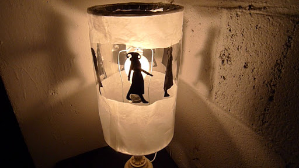

Tech: Now and Then

15 March 2021

One of the oldest types of "animation", multiple drawings made to resemble motion. Found in an Egyptian burial chamber.
Animation is an extremely strange thing. It's mostly an effect that's just a bunch of images that swap out frame-by-frame that tricks the eye into seeing movement, though it can be much more interesting than the average film. So, where did we first learn to make use of this? When did we start learning how to trick ourselves into seeing non-alive images move? Well, there's no real definite start, but there's a decent idea...
The first kind of animation was images that were painted on walls that resembled characters in motion. The first known examples of trying to capture this would be in the paleolithic time, where animals were drawn on the wall with many legs to show movement. With a flickering flame, the image would appear to move due to the constantly changing fire. In 5,200 BCE Iran, a bowl with 5 sequential images was found that illustrate motion, and in Egypt, there's a mural in the tomb of Khnumhotep that depict a wrestling match made in 4,000 BCE. The Parthenon Frieze had a similar mural in 400 BCE, and the anatomical studies of Leonardo da Vinci also showed movement through its four different angles of a man in the 1500's CE.
An example of a "trotting horse lamp", or a lamp that resembles movement.
The closest thing to resembling lifelike animations in 1000 CE would be the "trotting horse lamp". The way this lamp worked was that rising air would come up and spin the lantern due to its holes in the top that pushed the lantern when heat went through. The reason why they have "horse" in the name is that most were made with horses, with some even having wires to move the horse's head and feet.
The earliest form of projection on a screen would be shadow play, or the acts of having figures move on a screen for entertainment. They would be typically done with flat white screens and paper puppets that would move with articulated arms. The origin of this is found in Asia, with the Ottoman empire practicing it in 900 CE. This would continue in the end of the 18th century, where Francois Dominique Seraphin would host elaborate shadow shows, sometimes involving clockwork mechanics.

A sketch of an idea for Death taking off his head in a Magic Lantern animation.
The next major advancement in lifelike animation was the "Magic Lantern", created by Chrisitiaan (it had two a's) Huygens in 1659. What this device did was take glass slides and move certain parts of the slide that had extra parts, like an extra hand or thing that would seem to make something move. How the things moved was either by hand via a crank, or a mechanical clockwork-like movement that made the glass slide move in a fixed pattern. A more advanced version of this was done in 1770 by Edme-Gilles Guyot, which showed how to project a Magic Lantern image on smoke to create a transparent image of something. This technique was used in phantasmagoria (horror) shows, and it could be made larger or smaller by moving it further/closer to the audience. This technique is used in the Disney Haunted Mansion ride in Orlando, Florida with its ballroom scene, seen here. Warning: volume is kinda loud in the clip.

A sketch of an idea for Death taking off his head in a Magic Lantern animation.